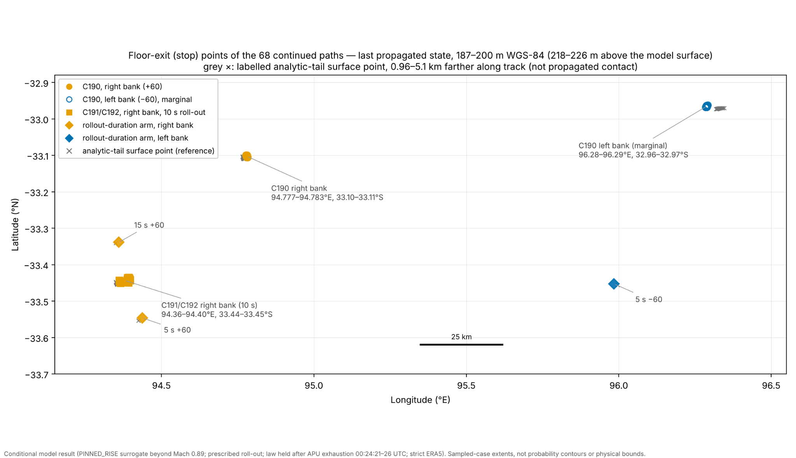
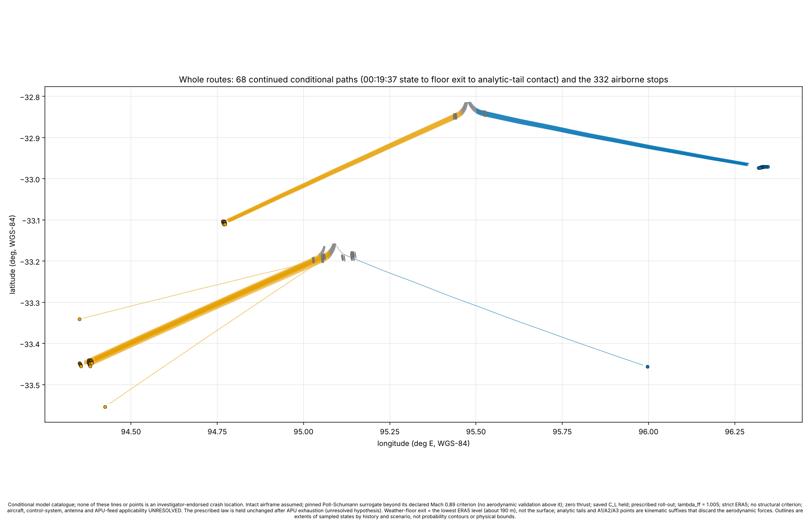

This page is my own judgment about what the work means, written in the first person and kept separate from the model results. Everything on the other pages stands on its own record; this page does not. — Ryan Hall
Updated

I believe MH370 may lie in or near one of the terminal regions shown on these maps. In my judgment, those regions deserve close examination alongside the available seabed-search records.
That judgment comes from building a mathematical world model and calculating connected aircraft histories through it. The work follows the aircraft against the clock: its turns, speed, heading, altitude, position, fuel use, decreasing mass, and the changing atmosphere through which it flies. The predicted satellite timing and frequency measurements are then compared with the public SATCOM record at the recorded transmission times.
The retained histories preserve that sequence from the radar handoff through the final transmissions and into the terminal scenarios. They allow another researcher to examine how a particular route was reached, what the aircraft was doing at each observation, and which assumptions carried it forward.

The terminal regions of the retained histories. Full detail, tables and the complete-flight evidence are on the Flight histories page.
The resulting geography has structure. The six incoming histories form two groups at the final transmissions. Their terminal branches spread westward and eastward into the lobes shown on the maps. Sixty-eight continued branches reach the lowest weather level supported by the model, a few hundred metres above the water. I regard those as terminal scenarios for the purpose of reporting the geographical flight envelope. The last calculated states and the short projected paths to the surface are identified separately in the published catalogue.
One check is worth singling out. The time at which the engines run out of usable fuel is an output of these histories, not something they were aimed at: all six reach it between 00:17:28.8 and 00:17:33.8 UTC, which leaves just under two minutes before the satellite terminal's log-on request at 00:19:29 — the one hard observation at the end of the flight. The model was given no information about that timing. I take that as support for the fuel and mass bookkeeping across six hours of flight, and no more than that: the starting fuel load is inherited from an earlier modelled trajectory rather than measured, and a half-percent change in fuel flow moves the event by nearly two minutes. It does not confirm the flameout time and it does not narrow the terminal geography. The full statement of that check is on the Flight histories page.
These are sampled flight histories under the stated model assumptions. The spaces between their branches have not all been demonstrated to be possible routes. Nevertheless, the concentration of the retained terminal scenarios is meaningful to me. It gives me a reason to focus attention on this part of the ocean and to ask how thoroughly its relevant areas have been examined.
The debris-drift evidence remains part of that assessment. I want the flight histories and the ocean-transport results considered together, with the assumptions of each visible. Our drift work has not isolated a unique source region, so I do not treat it as independent confirmation of these particular lobes.
I also have a working hypothesis about the final descent. I consider it possible that some components separated before the main aircraft entered the water, and that larger buoyant sections subsequently moved before sinking. I have considered an eastward displacement as one possibility.
That sequence has not been calculated by the present flight model. The continued paths assume an intact airframe, so their deceleration and glide occur inside that assumption and cannot themselves be evidence that a structure failed. The model does not determine whether the flaperon separated before impact, whether a larger wing failure followed, how that would have changed the descent, or how long a major section could have remained afloat. I therefore cannot assign a defensible distance limit to that proposed movement. The published debris examinations have not established whether the aircraft broke up in the air or on water entry, and the official investigation did not resolve it either.
My confidence in the geographical result does not require every part of that proposed accident sequence to be correct. The flight histories can be examined on their own merits. The structural-failure and flotation ideas need their own evidence.
My name is Ryan Hall. In December 2025, I worked with the United Cajun Navy in locating aircraft N80FP in Lake Pontchartrain, Louisiana, using AI-assisted mathematical modelling. That experience gave me a practical reason to pursue this kind of work and to make the calculations open to scrutiny.
For MH370, my aim has been to test how far the public observations and a physically constrained world model can carry the reconstruction. I have tried to preserve the connected histories, the unsuccessful attempts, the corrections and the limits encountered along the way — which is what the Archive of attempts is for.
I cannot turn a regional result into a precise wreck coordinate simply by stating it more confidently. What I can offer is a set of connected histories, their terminal geography, and a record that others can inspect.
I also asked the AI model that directed and audited this work for its own conclusion, as a test of what such a model can do with the public record. Its answer is on a separate page so it cannot be mistaken for mine or for a model result: Claude’s assessment.
The claim above rests on material you can open: the complete flight histories with their routes, fuel and mass, and satellite comparisons; the terminal catalogue findings and their frozen method; the canonical observations; and the retired attempts with the reason each was retired. On the debris examinations, see the ATSB's search and debris update and the Malaysian safety investigation report, the primary source on the debris examinations and on what could and could not be concluded about the breakup.